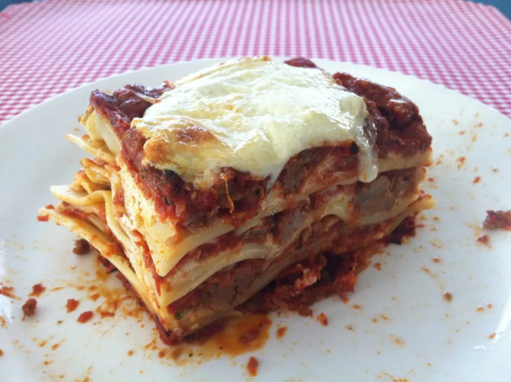

Traditional homemade sicilian lasagna. It's easy to prepare and tastes just like home.
For the best results make with love and help of family members.
Originally at: Sicilian Girl
In a 13x9x2 inch baking dish:
Ahhh! the taste of home. This makes me nostalgic and hungry.